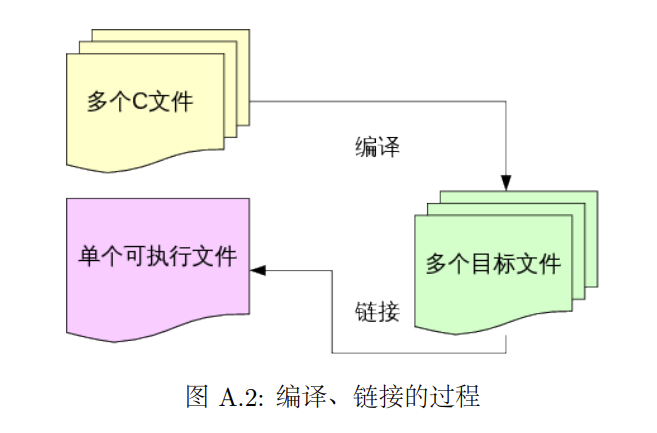
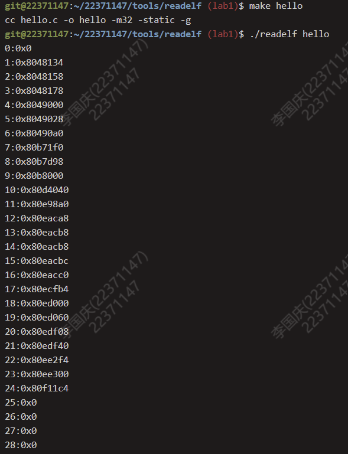

BUAA_OO_lab1
操作系统lab1学习日记
一、思考题
Thinking1.1
objdump -DS 要反汇编的目标文件名 > 导出文本文件名- -D：反汇编所有的section；
- -d：反汇编那些特定指令机器码的section；
- -S ：尽可能反汇编出源代码，尤其当编译的时候指定了-g 这种调试参数时，效果比较明显,隐含了-d参数;
- -s：显示指定section的完整内容。默认所有的非空section都会被显示
printf 的实现是在链接 (Link) 这一步骤中被插入到最终的可执行文件中的。节省了过程中对printf这些频繁使用的程序的编译。

Thinking1.2
二、测试题Exercise
exercise1.1
核心思路：认识结构体中各个变量的意义计算地址及其他变量即可
测试结果：

三、学习过程
readelf [option(s)]，用来解析一个或者多个 ELF 文件的信息，使用readeif可以查看具体用法，我们执行 readelf -S hello 命令后，hello 文件中各个节的详细信息将以列表的形式为我们展示出来。我们可以利用 readelf 工具来验证我们自己写的简易版 readelf 输出的结果是否正确，还可以使用 readelf —help 看到该命令各个选项及其对 ELF 文件的解析方式- .text 保存可执行文件的操作指令。 .data 保存已初始化的全局变量和静态变量。 .bss 保存未初始化的全局变量和静态变量。
BUAA_OO_lab1
https://fantasylee21.github.io/2024/03/16/BUAA-OO-lab1/